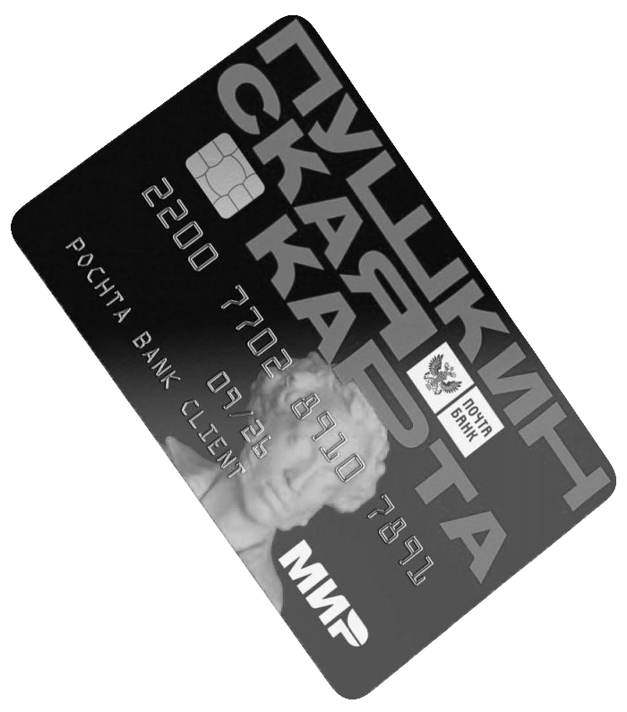
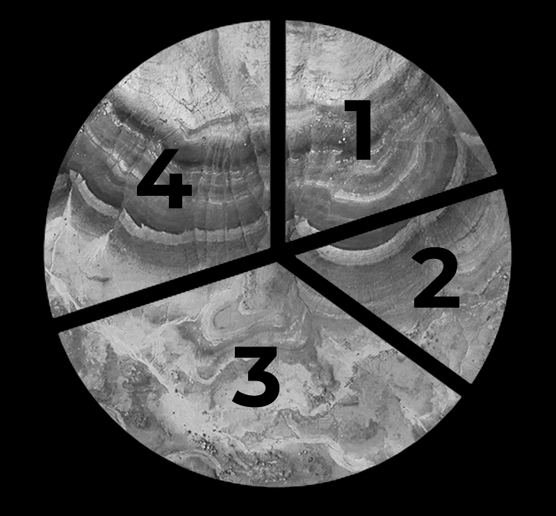

ПУШКИНСКАЯ
#
КАРТА
МОЛОДЕЖИ
ПОЛИНА АНЦЫФРОВА / 08.10.2021
ИВАНОВСКИЙ
ГОСУДАРСТВЕННЫЙ
УНИВЕРСИТЕТ
2021 STUDENЬ
В 2021 ГОДУ 30 ИЮНЯ
В.В. Путин впервые рассказал о проекте «Пушкинская
карта», который начал действовать с 1 сентября. Это
электронная карта, которой может воспользоваться
школьник или студент от 14-ти до 22-х лет для покупки
билетов на культурно-массовые мероприятия.

Причем концерты музыкальных
исполнителей и кино к данной
категории не относятся.
Карта стала актуальным средством оплаты билетов в театры, музеи и
даже планетарии среди молодежи, однако возникает вопрос:
Ответ прост: в связи с эпидемиологической ситуацией в стране
большинство музеев отменили льготу или ограничили количество
льготных билетов.
“Зачем нужна карта, если студентам и
школьникам итак на большинство культурных
мероприятий полагается льготный билет?”
Но с начала 2022 года баланс
аннулируется, а после его обещают
пополнить на 5 тысяч рублей – эта
сумма станет лимитом на 2022 год.
СРЕДИ НИХ
ЧТОБЫ УЗНАТЬ ПОДРОБНЕЕ
Наша команда дополнительно опросила 20% проголосовавших за ответ
«Я знаю о Пушкинской карте, и пользовался ей», среди которых 7.5%
детально рассказали мне о приобретении билетов на культурно-
массовые мероприятия с помощью Пушкинской карты. По статистике из
проведенного социального опроса картой пользуются в основном
студенты колледжей и университетов.
От студента Ивановского Государственного университета
Владимира Карасева мы узнали, что как только выпустили проект,
произошел технический сбой, благодаря которому Владимир смог
приобрести билет на концерт музыкального исполнителя.
1
Студентка Дзержинского филиала президентской академии РАнХИГС
Александра Калинина смогла приобрести билет в Нижегородский
театр оперы и балета, потратив на это 700 пушкинских рублей.
А от студентки Нижегородского государственного университета им.
Лобачевского Александры Галяновой мы выяснили, что по
Пушкинской карте можно приобретать билеты только на свое имя.
2
3
Однако прочитав в интернете несколько статей, я узнала, что
данная афера может привести к административному наказанию,
ведь государство выпустило карту для того, чтобы подростки
могли культурно развиваться, а не бездумно прогуливать деньги
5
ПРОЦЕСС ВЫПУСКА ПРОСТ
С этого момента начинается все самое интересное
НО БЫЛА И ДРУГАЯ ПРОБЛЕМА
Выпустив карту до поездки, я пыталась приобрести билет в Эрмитаж,
ведь такая возможность в приложении предоставлялась, но, как только
дело доходило до оплаты, банк отклонял мою операцию. Большинство
проголосовавших в опросе за ответ «Хотел купить билет по Пушкинской
карте, но ничего не вышло» также столкнулись с этим.
ИНТЕРЕСНЫЙ ФАКТ
Последний вопрос социального опроса звучал так: «Как вы считаете, что
стоило бы изменить или улучшить в проекте?», он относился к 20% тех
людей, кто уже успел воспользоваться картой.
Мы получили следующие предложения
Опросив классных руководителей МБОУ СШ
№23 города Дзержинск, я узнала, что количество
ребят, посещающих музеи и театры,
увеличилось в 1.5 раза, ведь теперь родителям
не нужно платить на культурное просвещение
ребенка, а школьники только «ЗА» посещение
культурно-массовых мероприятий.
Карта стала незаменимой для школьников, которые
целым классом посещают театры
Проведя социальный опрос, можно вынести такой вердикт
Проект «Пушкинская карта» только начал набирать свою популярность
среди молодых людей. Большинство уже слышали и даже
воспользовались или попытались воспользоваться картой. В интернете
люди разделились на два лагеря, среди которых одни говорят:
«Какие нам музеи, если жрать нечего»
Другие же оставляют хорошие отзывы и
благодарят государство за возможность
получать культурное просвещение
бесплатно. Наша команда относится ко
второму типу, но разделяет мнение, что
недостатки исправить нужно, иначе карта
быстро потеряет свою актуальность.
Сделать доступным покупку билетов по карте во все музеи
Улучшить механизм оплаты, так как у многих просто не
получается оплатить билеты, несмотря на выполнение всех
указаний
Расширить список культурно-массовых мероприятий, на
которые можно купить билет по Пушкинской карте
Физической версии карты не существует, но
карту можно подключить к NFC – это
технология беспроводной передачи данных
малого радиуса действия. Заполнив данные
карты в системе, вы можете оплачивать билеты
в кассах, однако мне не удалось найти людей,
которые смогли оплатить билет системой NFC.
Стоит отметить, что баланс карты
не безлимитный: с 1 сентября 2021
года по 1 января 2022 года он
составляет 3 тысячи рублей.
Купить билет на спектакль не составит труда, ведь вы выбираете
конкретное представление, а вот у музеев другая фишка. Музеи проводят
определенные выставки по конкретным датам, и, если вы хотели попасть
в музей 25-го числа, а выставка прошла 24-го, увы, придется ждать до
следующего раза. Так я и не потратила ни одного пушкинского рубля.
В приложении нужно зайти в свой личный кабинет, а после, если вы
школьник или студент, сразу вылезет предложение по оформлению
Пушкинской карты, далее нужно ввести личные данные и карта готова!
Карта не является именной, но у каждого есть индивидуальный номер
и СVV-код. Под самой картой будут располагаться культурно-массовые
мероприятия, проходящие в том городе, где вы находитесь.
Студентка Дзержинского колледжа им. Красной армии Амина
Еремина поделилась с нами интересным фактом, что можно
вывести деньги с Пушкинской карты на карту СБЕРБАНК и
распорядиться этими тремя тысячами как угодно.
4
Стоит отметить, что по Пушкинской карте можно купить билет не на все
мероприятия, а лишь на те, которые есть в приложении. Кликая на тот
или иной музей, театр или что-то другое, вам предоставляется полное
описание мероприятия.
Скорее всего, у каждого уже есть личный кабинет на сайте ГОСУСЛУГ,
а у кого нет – зарегистрироваться на сайте легко. Для выпуска своей
карты вам также понадобится приложение «ГОСУСЛУГИ Культура».
20% проголосовали за ответ
1 – «Я знаю о Пушкинской
карте и пользовался ей»
15% проголосовали за ответ
2 – «Нет, не слышал о
Пушкинской карте»
35% проголосовали за ответ
3 – «Да, слышал, но никогда не
пользовался картой»
30% проголосовали за ответ
4 – «Хотел приобрести билет
по Пушкинской карте, но
ничего не вышло»
“Купив два билета на меня и мою подругу, нас
буквально не хотели впускать, так как билеты были
приобретены с одной карты”
Стоит обратить внимание, что в условиях приобретения билета
указано, что его можно покупать только для себя и по своему
паспорту. Но, поскольку мероприятие будет только в конце
октября, Елизавета пока не в курсе, сможет ли она пройти в
музей или нет
Студентка Дзержинского Технического колледжа Анастасия
Елизарова рассказала, что за этот месяц успела потратить весь
лимит на 2021 год. Девушка приобрела в ходе технического сбоя
два билета на концерты музыкальных исполнителей, а на
оставшуюся тысячу студентка купила билет в театр.
6
Я же отношусь к 30% тех, кто хотел приобрести
билет по Пушкинской карте, но ничего не вышло.
А еще я совсем недавно вернулась из культурной столицы России,
но, находясь в Санкт-Петербурге, мне хотелось попасть в большое
количество музеев, и отдавать за это 500-700 рублей было жалко,
именно поэтому я выпустила Пушкинскую карту.
Что касается Ивановской области, то в приложении вы сможете приобрести
билеты в 4 музея и 5 театров. На сегодняшний день в приложении
«ГОСУСЛУГИ Культура» это полный список мест, которые можно посетить.
Немаловажно, что купившие билет на концерт музыкальных
исполнителей еще только ждут предстоящего события, а вот
удастся ли им попасть на мероприятие – пока неизвестно
Студентка Нижегородского Политехнического университета
Елизавета Малыгина поделилась тем, что долго не могла
приобрести билет в Московский музей. В итоге ее выручил
одногруппник и приобрел билет по своей карте.
Сейчас это сделать невозможно, поскольку этот сбой был
благополучно в скором времени устранен, ведь концерты
не относятся к культурно-массовым мероприятиям
Пушкинскую карту может оформить любой
человек с 14-ти до 22-х лет, однако не у каждого
получилось приобрести билет по карте.
В социальной сети Instagram нашей командой был проведен
социальный опрос, в котором приняли участие 200 человек
от 13-ти до 27-ми лет.
ПОЛИНА АНЦЫФРОВА / 08.10.2021
ФОТО:
www.culture.ru/pushkinskaya-karta

2021 STUDENЬ
ИВАНОВСКИЙ
ГОСУДАРСТВЕННЫЙ
УНИВЕРСИТЕТ